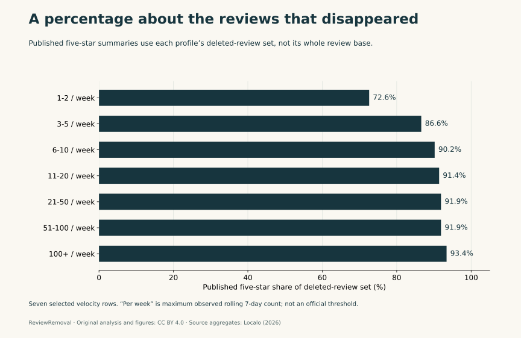
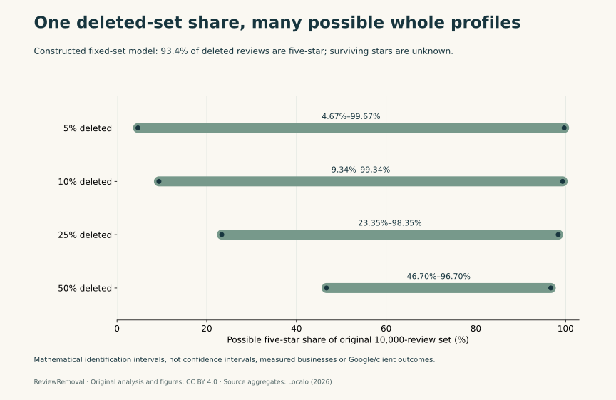
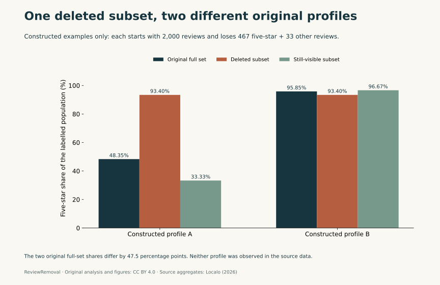

Published by ReviewRemoval. Authorship, sources and correction standards.
On this page
A published figure of 93.4% five-star reviews sounds like a description of a business profile. In the source table examined here, it describes the profile’s deleted-review set. That difference prevents a direct jump from the statistic to a rule that a business with more than 90% five-star reviews is at a quantified risk of Google review removal.
Our new compilation contains 11 source rows and six constructed models. We preserve the source’s population definitions, calculate four identification ranges and build two exact integer examples. The contribution is a reusable audit and mathematical demonstration, not newly collected Google reviews or independently verified client results.
Can a Google review risk score tell you whether a review will be removed?
Not from these public summary tables alone. A percentage among deleted reviews does not provide the probability that a currently visible review will be deleted, and a score built from selected profiles is not automatically calibrated for every business. The relevant question is what population the numerator and denominator describe.
Google’s published Maps content policy prohibits fake engagement and rating manipulation. It describes unusual contribution patterns as potentially relevant; this policy page does not publish a 90% five-star rule or a universal weekly review quota that establishes an individual removal outcome. Those numerical rules should not be presented as official Google thresholds.
What we took from the source—and what we did not
Localo’s May 2026 study describes 335,520 deleted reviews from 22,292 profiles. Its methods identify a smaller correlation set of 5,804 profiles with more than ten deleted reviews. The percentage fields are defined against each profile’s deleted-review set, while velocity is the maximum observed rolling seven-day review count.
| Published velocity label | Profiles | Median creation-to-removal age | Average deletions per profile | Five-star share of deleted set |
|---|---|---|---|---|
| 1-2 / week | 773 | 594 days | 16 | 72.6% |
| 3-5 / week | 1,472 | 129 days | 21 | 86.6% |
| 6-10 / week | 1,557 | 53 days | 30 | 90.2% |
| 11-20 / week | 1,155 | 20 days | 54 | 91.4% |
| 21-50 / week | 639 | 9 days | 106 | 91.9% |
| 51-100 / week | 137 | 8 days | 218 | 91.9% |
| 100+ / week | 71 | 6 days | 533 | 93.4% |
Scroll sideways to see every column.
These are attributed source summaries. We did not obtain individual timestamps, full star histograms, a still-visible comparison cohort or the scoring implementation. We therefore do not independently reproduce the source’s predictive model or relabel every deletion as proven fraud.



The 5,804 profiles are a defined subset, not missing records
The seven profile counts sum to 5,804, matching the selected correlation set. Dividing by the broader 22,292-profile count gives about 26.04%. This is a scope check, not a discovery that the other profiles went missing: the source explicitly states an inclusion condition.
The condition matters for interpretation. A business must already have more than ten deleted reviews to enter that correlation analysis. A profile with one suspected fake review, no recorded deletions, or a new listing is not automatically represented by the selected set. Describing a relationship inside that set is different from estimating an event probability for all businesses.
The maximum rolling-week measure also differs from a current weekly rate or a sustained average. A single busy period can set a maximum. A reader should not silently turn it into a claim about every week, nor interpret cumulative deletion totals over the measurement window as annual rates.
The denominator error behind a whole-profile “red flag”
Let N be an original fixed review set, D the number deleted, r the five-star fraction among deleted reviews, and s the five-star fraction among the survivors. The original profile’s five-star fraction is:
p = (D/N) × r + (1 − D/N) × s
Knowing r does not identify s or the deletion fraction D/N. A high five-star share among removed content can coexist with a much lower or higher five-star share among all original reviews. A population measure about what disappeared is not a complete histogram of what was there.
There is a second aggregation issue. The source’s percentage definition is profile-level. Without the individual denominators and aggregation rule, multiplying a displayed group percentage by the study-wide deletion total does not recover an exact number of five-star reviews. Different profiles may contribute very different numbers of deleted reviews.
Four new identification ranges from the same 93.4% example
For a fixed deletion fraction q = D/N, the unknown surviving fraction can lie anywhere from zero to one. That gives the exact mathematical bound:
q × r ≤ p ≤ q × r + 1 − q
We set N = 10,000 and fix r = 467/500 = 93.4% in four constructed examples. This is an exact modelling choice that numerically matches a source display; it is not a reconstruction of an actual source row or a claim that its rounded percentage is an exact pooled count.
| Original reviews | Deleted reviews | Five-star deleted | Possible original five-star share |
|---|---|---|---|
| 10,000 | 500 | 467 | 4.67%–99.67% |
| 10,000 | 1,000 | 934 | 9.34%–99.34% |
| 10,000 | 2,500 | 2,335 | 23.35%–98.35% |
| 10,000 | 5,000 | 4,670 | 46.70%–96.70% |
Scroll sideways to see every column.



Even when one quarter of the original reviews is deleted, the possible original five-star share stretches from 23.35% to 98.35%. The deleted-set percentage alone is therefore an unusually weak basis for a claim about the whole original profile. A narrower answer requires additional information about the surviving reviews or other justified constraints.
Two complete examples with a 47.5-percentage-point gap
Both constructed profiles below start with 2,000 reviews. Each loses exactly 467 five-star and 33 other-star reviews. The difference is the composition of the 1,500 survivors.
| Constructed profile | Original five-star reviews | Five-star survivors | Original five-star share | Five-star share among deleted |
|---|---|---|---|---|
| A | 967 | 500 | 48.35% | 93.4% |
| B | 1,917 | 1,450 | 95.85% | 93.4% |
Scroll sideways to see every column.



The original full-set shares differ by 47.5 percentage points while the deleted-set shares are identical. This does not establish the real distribution in the source data. It establishes that the deleted-set percentage, by itself, cannot determine that distribution. The combined “other stars” category also means we do not infer either profile’s average star rating.
What the published top-versus-bottom contrasts establish
| Source factor | Top risk quintile | Bottom risk quintile | Nominal ratio |
|---|---|---|---|
| Five-star share of deleted reviews | 97.6% | 59.3% | 1.65× |
| Generic-phrase share of deleted reviews | 26.2% | 11.2% | 2.34× |
| Maximum reviews per week | 39.7 | 4.6 | 8.63× |
| Average deletions per profile | 114 | 23 | 4.96× |
Scroll sideways to see every column.
A ratio of two group summaries is not a relative removal risk. A risk ratio would require appropriately defined outcome counts and exposure denominators. Here, the percentage measures are already conditioned on deleted sets, and the profiles were selected using prior deletion activity. We cannot turn the nominal 8.63× velocity contrast into an 8.63× probability that a particular negative review will disappear.
The broader statistical concern—how selecting observations can change the inference—is discussed by Miguel Hernán, Sonia Hernández-Díaz and James Robins in A Structural Approach to Selection Bias. That paper supplies general methodology, not an endorsement of this dataset or proof of a particular causal structure in Google moderation.
What Canadian businesses should ask before acting on a score
For a business in Toronto, Calgary or another Canadian community, start with the review and the supported policy concern. The source does not publish a separate Canadian calibration, and the models here do not measure local deletion rates. A profile’s location is useful for matching the right listing, not for inventing a provincial probability.
- Ask whether a percentage describes all reviews, removed reviews, reported reviews or accepted agency cases.
- Ask which profiles qualified for the study and whether your situation meets that condition.
- Separate an algorithm-risk label from evidence that a particular review violates a policy.
- Request the validation population and error measures before interpreting a score as a probability.
- Keep each review’s report, decision and current visibility in separate dated fields.
Our Google evidence checker, reporting and appeal guide and blank case tracker support that process. Managed assistance is CAD $50 upfront per review and $125 for each successful removal, subject to the service terms. A published risk score does not change those platform decisions or guarantee a result.
Questions this analysis can answer
Does having 90% five-star reviews prove a profile is fake?
No. The percentage alone does not establish whether the experiences were genuine. Google’s cited policy concerns the conduct and content. This analysis also shows why a deleted-set percentage cannot simply be applied to every review on a profile.
Does this show that the source study is wrong?
No. We preserve its explicit method definitions and selected population. Our contribution is to test what can be inferred from its public aggregates, not to reproduce or invalidate the underlying records. The mathematical examples demonstrate non-identification, not a measured error rate.
Are these models advice to remove positive reviews or manage a quota?
No. Do not delete genuine feedback or manipulate who may leave a review to target a statistical ratio. A model about denominators is not a campaign rule. A suspicious review needs its own facts and applicable reporting route.
Methods, checks and limitations
We checked the live source on October 27, 2026 and preserved a private source-text fingerprint. The public input file contains the selected numerical rows, source URL and definitions. The builder exports eleven attributed rows and six mathematical rows in separate CSVs and combined JSON. Source labels, including the “100+” boundary wording, remain unchanged.
The audit independently verifies the 5,804 row-count sum, source values, CSV parity, exact integer examples and identification-bound endpoints. When the local source capture is available, it verifies its fingerprint and selected table values. The plot script renders three original figures from the exported JSON. No raw profile histories, fraud labels, independent Google decisions or held-out validation results were obtained.
The bounds assume a fixed original set, known removals and unknown surviving composition, with no new reviews or other changes. Real profiles change over time. The models are illustrative mathematical statements and cannot estimate a service success rate, review prevalence or probability of a platform action. Commercial interest: ReviewRemoval sells review-reporting services; these data contain no evidence of our own case results.
Download the data, models and citation
- Seven attributed velocity rows · Column definitions.
- Four source contrasts and nominal ratios · Column definitions.
- Four mathematical identification scenarios, not observations · Column definitions.
- Two synthetic integer examples, not Google or client observations · Column definitions.
- Combined source attribution, calculations and limitations.
- Source inputs and provenance · Dataset builder · Independent audit · Plotting script.
- BibTeX citation.
Reproduce with python build-google-risk-study.py, then python audit-google-risk-study.py. Plotting requires Matplotlib and the generated JSON. The original compilation, calculations and figures are available under CC BY 4.0; original publishers retain rights in their material. Identify synthetic examples and assumptions when reusing a chart.
Suggested citation
ReviewRemoval. (2026, October 27). Google Review Risk Scores: A Denominator Study (Version 1.0). Article and data. Attribute the underlying observed aggregates to Localo and the constructed models to ReviewRemoval.
Primary sources
- Localo: Buying Google Reviews Doesn’t Work—Review Velocity Study, May 29, 2026. Selected velocity/quintile rows and the methods defining the 5,804-profile correlation set and deleted-set percentages.
- Google Maps: prohibited and restricted content. Public fake-engagement and rating-manipulation rules.
- Google Business Profile: reporting inappropriate reviews. Policy-based reporting and eligible appeal routes.
- Hernán, Hernández-Díaz and Robins (2004), A Structural Approach to Selection Bias, Epidemiology 15(5), 615–625. DOI: 10.1097/01.ede.0000135174.63482.43.
Need help with a specific review?
Send the platform and the review link. We’ll assess the details and explain the price before paid work begins.
Request a review-specific assessment